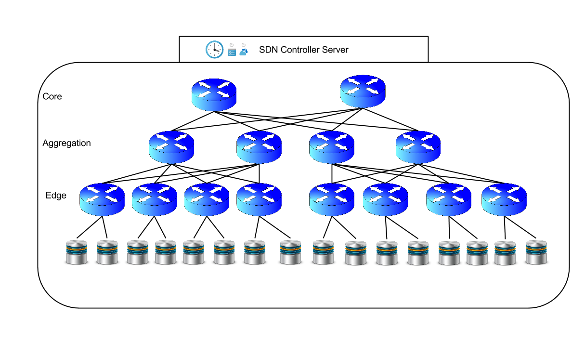

A High Performance Network-Aware Transactional Key-Value Storage System
About
With the increasing proliferation of big data, companies need to process terabytes of new data on a daily basis. To manage data at this scale, non-relational distributed databases have emerged over the past few years. Non-relational databases typically expose simple ‘get’ and ‘put’ operations and delegate query optimization to the application. This optimization is critical to reduce application response time. However, application level optimizations are hard to perform for distributed databases hosted within datacenters. Due to the shared nature of datacenters, applications do not have a global view or control of resources because of the virtualized environment. Another rapidly growing technology is Software defined networking (SDN). SDN enables us to perform network management and provisioning using a logically centralized controller.
NetStore is a combination of SDN with high performance non-relational databases. SDN naturally provides the required logically centralized controller that non-relational databases lack. On top of providing the controller, SDN also enables us to monitor and manage the network traffic, which is crucial for big data applications. NetStore is focused on combining SDN and non-relational databases to provide both the transactional properties from SQL databases as well as the performance benefits from Non-relational databases. The system consists of a SDN controller, a query scheduler and a distributed non-relational database. The SDN controller collects network states and manages network flows. The query scheduler sits on top of the SDN controller and schedules queries based on the current network conditions. Each query may optionally provide a response time requirement so the optimizer can make informed decisions to improve overall system performance using the hints provided by different queries. Such response time requirement may represent how urgent each request is within the application.
System Overview
|
The clients interact with NetStore using trasanctional APIs. The server receiving the query will act as the coordinator to perform the operations and return the result to the client. The coordinator server communicates with the controller using out-of-band network connections to offload traffic from the underlying network infrustracture that ships data. Each operation of a transaction query will be scheduled by the controller; the coordinator server will in turn perform the operations by retrieving the data from its local storage or other remote storages hosted by other servers.
|
|
|

|
The core of NetStore is the controller which is built upon extensions to the Floodlight software-defined networking controller.
This centralized controller monitors various states of the system. The current focus of this project is to exploit the network aware property of SDN to improve queries response times. In particular, the SDN controller will keep track of how many flows are installed on each network link and use this information to determine when to execute each query. Initial experiment shows that NetStore can significantly improve the system performance by only considering the network states. However, NetStorage is not designed to only accomodate network bottlenecked situations but to also consider other factors such as CPU usage, power comsumption and any other system state. This work is in progress. Please stay tuned for updates in the near future.
|